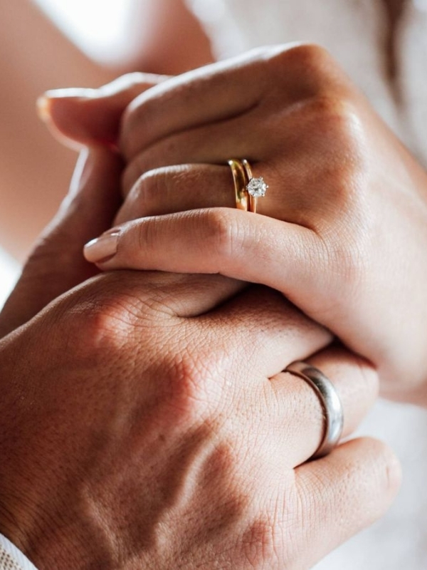

Capturamos tus momentos más importantes
Que lo efímero dure para siempre.
Descubre cómoServicios
Inmortalizamos los momentos más especiales de tu vida con la mejor atención al detalle.
Detrás de la cámara
Hola, soy Daniel García
Llevo más de 8 años capturando miradas, complicidades y momentos irrepetibles. Mi enfoque se basa en la fotografía natural, sin posados forzados, dejando que las emociones fluyan para contar tu historia tal y como es.
Cada boda, comunión o evento es un lienzo único. Mi objetivo es que dentro de 20 años vuelvas a mirar tus fotos y sientas exactamente lo mismo que el primer día.
Calcula tu presupuesto